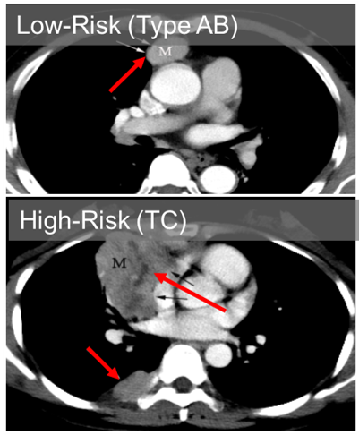
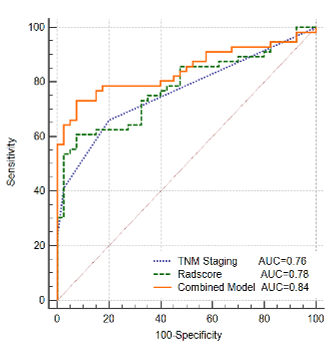
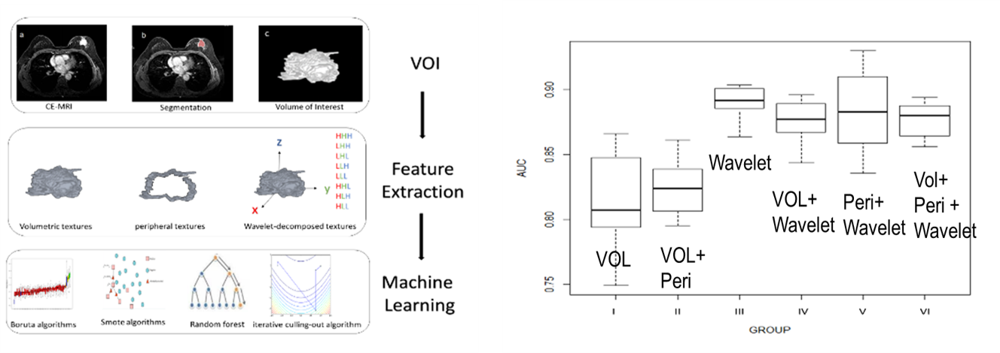
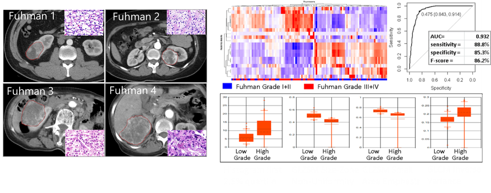
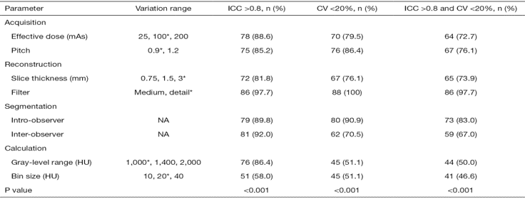

Risk Stratification of Thymic Epithelial Tumors by Using a Nomogram Combined with Radiomic Features and TNM Staging

ROCs of three models
Shen, Q., Shan, Y., Xu, W., Hu, G., Chen, W., Feng, Z., Pang, P., Ding, Z. and Cai, W., 2021. Risk stratification of thymic epithelial tumors by using a nomogram combined with radiomic features and TNM staging. European Radiology, 31(1), pp.423-435.
Predicting the Response to Neoadjuvant Chemotherapy for Breast Cancer: Wavelet Transforming Radiomics

Wavelet-transformed textures outperformed volumetric and/or peripheral textures in the radiomic MRI prediction of pCR to NAC for patients with LABC
Zhou, J., Lu, J., Gao, C., Zeng, J., Zhou, C., Lai, X., Cai, W. and Xu, M., 2020. Predicting the response to neoadjuvant chemotherapy for breast cancer: wavelet transforming radiomics in MRI. BMC cancer, 20(1), p.100.
Radiomics Tumor Grading of Renal Cell Carcinoma

Assessment of pathological grade of clear cell renal cell carcinoma (ccRCC) on contrast-enhanced CT: 110 ccRCC, 11 selected features (352 textures)
Li et al. (2017) Chinese Radiology Journal
Influence of Feature Calculating Parameters on the Reproducibility of CT Radiomic Features: A Thoracic Phantom Study

Thirty-six CT scans from an anthropomorphic thoracic phantom were acquired on a Philips 16-row CT scanner with different imaging parameters including effective dose, pitch, slice thicknesses and reconstruction kernels. Feature reproducibility was assessed by the intraclass correlation coefficient (ICC) with the cutoff value of 0.8 and the coefficient of variation (CV) with the cutoff value of 0.2.
Li, Y., Tan, G., Vangel, M., Hall, J. and Cai, W., 2020. Influence of feature calculating parameters on the reproducibility of CT radiomic features: a thoracic phantom study. Quantitative Imaging in Medicine and Surgery, 10(9), p.1775.